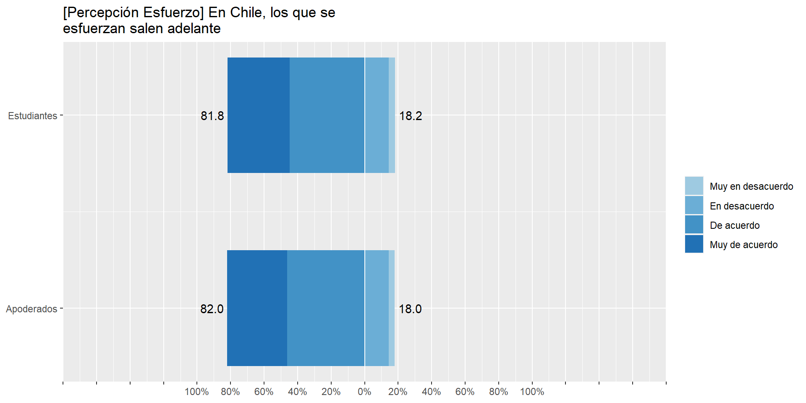
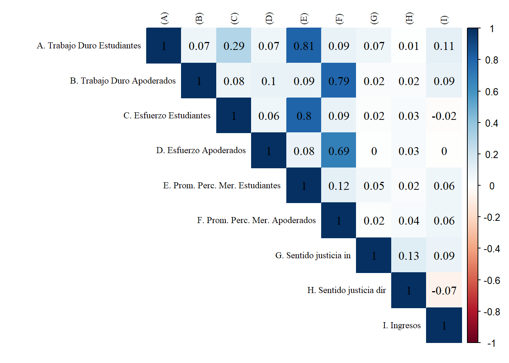
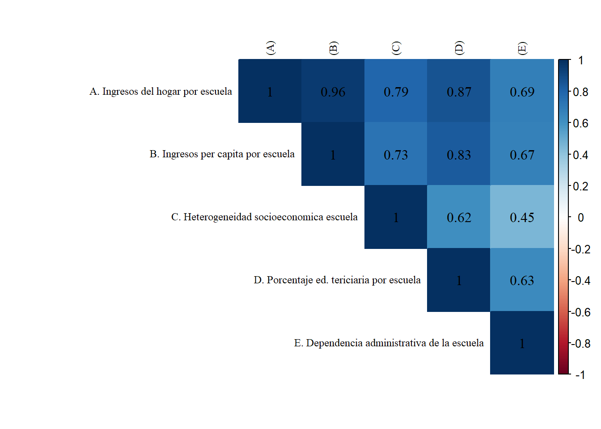
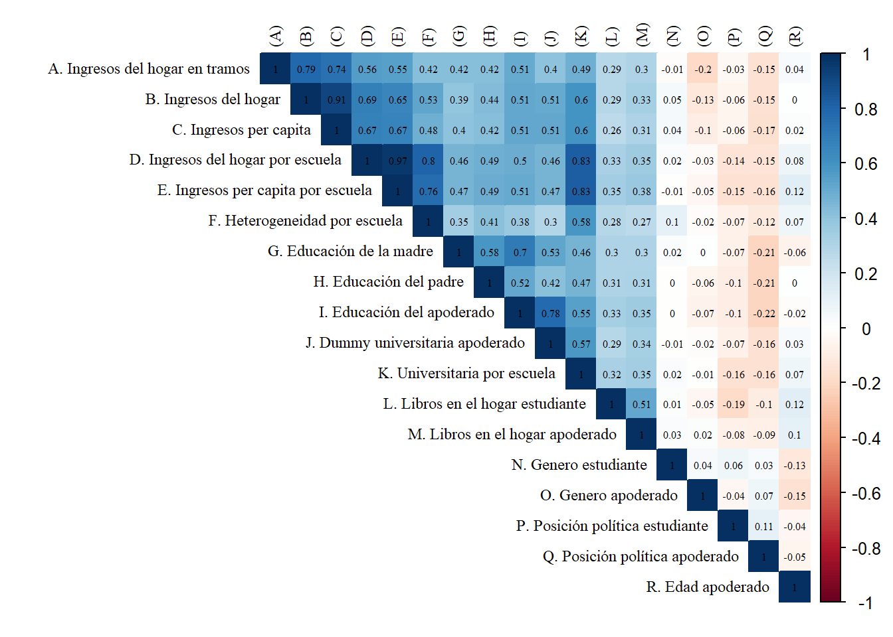

El presente documento tiene por finalidad el análisis incial de datos para el artículo “La socialización de la meritocracia: el rol de la familia y la escuela” a cargo de Juan Carlos Castillo. El artículo se desarrolla en el marco del proyecto FONDECYT Regular N°1181239: “Socialización política y educación para la ciudadanía: el rol de la familia y de la escuela”.
El documento se estructurará en cuatro apartados. El primero corresponde a la carga de datos y las librerías. El segundo a los análisis descriptivos univariados. El tercero a la sección de análisis descriptivos bivariados. Por último, la cuarta sección estará dedicada al análisis multivariado.
# Cargar librerías
pacman::p_load(dplyr, #Manipulacion de datos
stargazer, #Tablas
sjmisc, # Tablas
summarytools, # Tablas
kableExtra, #Tablas
sjPlot, #Tablas y gráficos
corrplot, # Correlaciones
sessioninfo, # Información de la sesión de trabajo
ggplot2, # Graficos
sjlabelled, # Etiquetas
ordinal, # Modelos ordinales,
mixor, # Modelos ordinales
lme4, # Modelos mixtos,
lavaan, # CFA
texreg, # Tablas modelos
reghelper # ICC
)
# Cargar datos
load(file = "../input/data/ap_est.RData") # Base conjunta
# Orden para modelos ordinales (mixor package)
ap_est_rbd<-ap_est[order(ap_est$rbd_est),]
# Remover etiquetas para rende
ap_est <- sjlabelled::remove_all_labels(ap_est)A continuación se presentan los descriptivos de la base de datos completa:
sjPlot::view_df(ap_est, show.type = T, show.prc = T, show.na = T)| ID | Name | Type | Label | missings | Values | Value Labels | % |
|---|---|---|---|---|---|---|---|
| 1 | rbd_est | numeric | 0 (0.00%) | range: 218-31421 | |||
| 2 | region_est | numeric | 0 (0.00%) | range: 2-13 | |||
| 3 | folio | numeric | 0 (0.00%) | range: 1-20390 | |||
| 4 | dependencia_est | numeric | 0 (0.00%) | range: 1-3 | |||
| 5 | pos_pol_est | numeric | 25 (1.53%) | range: 1-99 | |||
| 6 | genero_est | numeric | 25 (1.53%) | range: 1-3 | |||
| 7 | resp_porf | numeric | 159 (9.72%) | range: 1-4 | |||
| 8 | educ_padre | numeric | 224 (13.70%) | range: 1-5 | |||
| 9 | educ_madre | numeric | 181 (11.07%) | range: 1-5 | |||
| 10 | libros_hogar_est | numeric | 147 (8.99%) | range: 1-6 | |||
| 11 | perc_trabajo_duro_est | numeric | 47 (2.87%) | range: 1-4 | |||
| 12 | perc_esfuerzo_est | numeric | 67 (4.10%) | range: 1-4 | |||
| 13 | prom_obt | numeric | 136 (8.32%) | range: 1.0-7.0 | |||
| 14 | prom_mer | numeric | 165 (10.09%) | range: 1.0-7.0 | |||
| 15 | sj_direct | numeric | 94 (5.75%) | range: 1-3 | |||
| 16 | recompensa_est | numeric | 67 (4.10%) | range: 1-4 | |||
| 17 | prom_percmer_est | numeric | 80 (4.89%) | range: 1.0-4.0 | |||
| 18 | perc_esfuerzo_factor_est | categorical | 67 (4.10%) |
Muy en desacuerdo En desacuerdo De acuerdo Muy de acuerdo |
3.76 14.48 44.64 37.12 |
||
| 19 | perc_trabajo_duro_factor_est | categorical | 47 (2.87%) |
Nada importante Algo importante Importante Muy importante |
4.35 12.22 26.01 57.43 |
||
| 20 | sj_indirect_ln | numeric | 171 (10.46%) | range: -0.9-1.1 | |||
| 21 | sj_indirect_noln | numeric | 171 (10.46%) | range: -0.9-1.1 | |||
| 22 | sj_direct_factor | categorical | 94 (5.75%) |
Menos de las que merezco Las que merezco Más de las que merezco |
22.65 63.47 13.89 |
||
| 23 | educ_padres | numeric | 238 (14.56%) | range: 1-5 | |||
| 24 | educ_padres_factor | numeric | 238 (14.56%) | range: 1-5 | |||
| 25 | genero_factor_est | numeric | 159 (9.72%) | range: 1-4 | |||
| 26 | pos_pol_factor_est | categorical | 25 (1.53%) |
Derecha Centro derecha Centro Centro Izquierda Izquierda Independiente Ninguna Ns/Nr |
10.62 4.97 3.73 4.97 5.09 4.04 21.86 44.72 |
||
| 27 | libros_hogar_factor_est | categorical | 147 (8.99%) |
Entre 0 y 10 libros Entre 11 y 25 libros Entre 26 y 100 libros Entre 101 y 200 libros Entre 201 y 500 libros Más de 500 libros |
22.18 23.39 29.17 13.51 7.59 4.17 |
||
| 28 | region_factor_est | categorical | 0 (0.00%) |
Región de Antofagasta Región del Maule Región Metropolitana |
24.89 21.65 53.46 |
||
| 29 | recompensa_factor_est | categorical | 67 (4.10%) |
Muy en desacuerdo En desacuerdo De acuerdo Muy de acuerdo |
10.14 23.79 49.87 16.20 |
||
| 30 | dependencia_factor_est | categorical | 0 (0.00%) |
Municipal Part. Subvencionado Part. Privado |
37.00 47.71 15.29 |
||
| 31 | rbd_ap | numeric | 919 (56.21%) | range: 218-31421 | |||
| 32 | region_ap | numeric | 919 (56.21%) | range: 2-13 | |||
| 33 | dependencia_ap | numeric | 919 (56.21%) | range: 1-3 | |||
| 34 | pos_pol_ap | numeric | 919 (56.21%) | range: 1-99 | |||
| 35 | genero_ap | numeric | 919 (56.21%) | range: 1-3 | |||
| 36 | nacimiento | numeric | 1010 (61.77%) | range: 1933-1992 | |||
| 37 | personas_hogar | numeric | 966 (59.08%) | range: 1-15 | |||
| 38 | educ | numeric | 952 (58.23%) | range: 1-4 | |||
| 39 | ingresos_tramos | numeric | 919 (56.21%) | range: 1-99 | |||
| 40 | libros_hogar_ap | numeric | 950 (58.10%) | range: 1-6 | |||
| 41 | perc_trabajo_duro_ap | numeric | 948 (57.98%) | range: 1-4 | |||
| 42 | perc_esfuerzo_ap | numeric | 953 (58.29%) | range: 1-4 | |||
| 43 | dem_desig | numeric | 933 (57.06%) | range: 1-4 | |||
| 44 | recompensa_ap | numeric | 969 (59.27%) | range: 1-4 | |||
| 45 | perc_trabajo_duro_factor_ap | categorical | 948 (57.98%) |
Nada importante Algo importante Importante Muy importante |
6.40 12.37 31.44 49.78 |
||
| 46 | perc_esfuerzo_factor_ap | categorical | 953 (58.29%) |
Muy en desacuerdo En desacuerdo De acuerdo Muy de acuerdo |
3.52 14.52 46.33 35.63 |
||
| 47 | prom_percmer_ap | numeric | 962 (58.84%) | range: 1.0-4.0 | |||
| 48 | ingresos | numeric | 1059 (64.77%) | range: 50500-3500000 | |||
| 49 | ingresos_pc | numeric | 1059 (64.77%) | range: 201-1750000 | |||
| 50 | ingresos_tramos_factor | categorical | 919 (56.21%) |
Menos de $101.000 mensuales líquidos De $101.001 a $134.000 mensuales líquidos De $134.001 a $179.000 mensuales líquidos De $179.001 a $224.000 mensuales líquidos De $224.001 a $291.000 mensuales líquidos De $291.001 a $358.000 mensuales líquidos De $358.001 a $448.000 mensuales líquidos De $448.001 a $1.000.000 mensuales líquidos De $1.000.001 a $2.000.000 mensuales líquidos De $2.000.001 a $3.000.000 mensuales líquidos Más de $3.000.000 mensuales líquidos Ns/Nr |
1.82 1.96 1.68 3.91 5.45 12.57 15.08 19.27 10.75 2.37 5.59 19.55 |
||
| 51 | quintiles_ingresos_pc | numeric | 1059 (64.77%) | range: 1-5 | |||
| 52 | quintiles_ingresos_pc_factor | categorical | 919 (56.21%) |
Quintil 1 Quintil 2 Quintil 3 Quintil 4 Quintil 5 Ns/Nr |
15.92 16.34 16.34 16.34 15.50 19.55 |
||
| 53 | edad_ap | numeric | 1010 (61.77%) | range: 27-86 | |||
| 54 | genero_factor_ap | categorical | 919 (56.21%) |
Hombre Mujer Otro |
18.58 81.28 0.14 |
||
| 55 | pos_pol_factor_ap | categorical | 919 (56.21%) |
Derecha Centro Derecha Centro Centro Izquierda Izquierda Independiente Ninguna Ns/Nr |
7.54 6.28 2.93 5.73 6.42 6.70 48.18 16.20 |
||
| 56 | libros_hogar_factor_ap | categorical | 950 (58.10%) |
Entre 0 y 10 libros Entre 11 y 25 libros Entre 26 y 100 libros Entre 101 y 200 libros Entre 201 y 500 libros Más de 500 libros |
19.42 28.91 35.04 10.66 4.67 1.31 |
||
| 57 | region_factor_ap | categorical | 919 (56.21%) |
Región de Antofagasta Región del Maule Región Metropolitana |
16.48 29.61 53.91 |
||
| 58 | recompensa_factor_ap | categorical | 969 (59.27%) |
Muy en desacuerdo En desacuerdo De acuerdo Muy de acuerdo |
5.11 19.97 53.60 21.32 |
||
| 59 | ingresos_esc | numeric | 925 (56.57%) | range: 187500.0-3000000.0 | |||
| 60 | ingresos_pc_esc | numeric | 925 (56.57%) | range: 43368.0-947400.0 | |||
| 61 | univ | numeric | 952 (58.23%) | range: 0-1 | |||
| 62 | univ_esc | numeric | 919 (56.21%) | range: 0.0-0.9 | |||
| 63 | dependencia_factor_ap | categorical | 919 (56.21%) |
Municipal Part. Subvencionado Part. Privado |
31.28 54.33 14.39 |
||
| 64 | heterogen_esc | numeric | 925 (56.57%) | range: 38682.5-2189909.7 | |||
| 65 | educ_ap | numeric | 952 (58.23%) | range: 1-4 | |||
| 66 | educ_factor_ap | categorical | 952 (58.23%) |
8vo básico o menos Educación media Educación Técnica Superior Educación universitaria o posgrado |
11.27 44.22 25.92 18.59 |
||
| 67 | prom_percmer_ap_cwc | numeric | 962 (58.84%) | range: -2.4-1.7 | |||
| 68 | sj_indirect_ln_cwc | numeric | 171 (10.46%) | range: -0.8-1.0 | |||
| 69 | sj_direct_cwc | numeric | 94 (5.75%) | range: -1.2-1.5 | |||
| 70 | pos_pol_est_cwc | numeric | 25 (1.53%) | range: -84.2-81.6 | |||
| 71 | genero_est_cwc | numeric | 25 (1.53%) | range: -0.9-1.7 | |||
| 72 | recompensa_est_cwc | numeric | 67 (4.10%) | range: -2.2-1.9 | |||
| 73 | resp_porf_cwc | numeric | 159 (9.72%) | range: -2.1-1.7 | |||
| 74 | pos_pol_ap_cwc | numeric | 919 (56.21%) | range: -71.6-90.1 | |||
| 75 | genero_ap_cwc | numeric | 919 (56.21%) | range: -1.0-1.0 | |||
| 76 | educ_ap_cwc | numeric | 952 (58.23%) | range: -1.9-2.1 | |||
| 77 | libros_hogar_ap_cwc | numeric | 950 (58.10%) | range: -2.3-3.9 | |||
| 78 | recompensa_ap_cwc | numeric | 969 (59.27%) | range: -2.2-2.3 | |||
| 79 | edad_ap_cwc | numeric | 1010 (61.77%) | range: -18.0-23.4 | |||
Se realizan dos gráficos para variables likert. El primero corresponde a la comparación de percepción del trabajo duro en estudiates y apoderados. El segundo es la misma comparación pero para la percepción de esfuerzo.
# Plot Likert: perc. trabajo duro apoderados y estudiantes
baselik<- ap_est %>% select(perc_trabajo_duro_est,perc_trabajo_duro_ap)
# short var labels
items <- c("Percepcion de meritocracia estudiantes", "Percepcion de meritocracia apoderados")
# cambiar orden para la leyenda
labels= c("Nada Importante", "Poco Importante", "Importante", "Muy Importante") ### E
#save
png("../output/images/Plot-lik-trabajoduro.png", width = 700, height = 350)
sjPlot::plot_likert(baselik,
axis.labels = items,
legend.labels = labels,
legend.pos = "bottom",
#cat.neutral = , # identifica a indiferentes
geom.colors = c("#9ECAE1", "#6BAED6", "#4292C6",
"#2171B5"), # colorbrewer2.org
sort.frq = "neg.asc", # sort descending)
title = "Actualmente en Chile, para surgir en la vida ¿Cuán importante es el trabajo duro?",
intercept.line.color = "white", # vertical middle
expand.grid = F, # no inner margins in plot
show.n = FALSE, # hide N's in axis labels
grid.range = 1.8,
geom.size = 0.6, values = "sum.outside")
dev.off()## png
## 2Las respuestas de estudiantes y apoderados sobre la importancia del trabajo duro se concentran en las categorías más altas de la escala Likert. Un 81.2% de apoderados considera importante o muy importante el trabajo duro para surgir en la vida. En la misma linea, un 83.4% de los estudiantes comparte tal afirmación.
# Plot Likert: perc. esfuerzo apoderados y estudiantes
baselik<- ap_est %>% select(perc_esfuerzo_est,perc_esfuerzo_ap)
# short var labels
items <- c("Percepcion esfuerzo estudiantes", "Percepcion esfuerzo apoderados")
# cambiar orden para la leyenda
labels= c("Muy en desacuerdo", "En desacuerdo", "De acuerdo", "Muy de acuerdo") ### E
# save
#png("../output/images/Plot-lik-esfuerzo.png", width = 750, height = 300)
sjPlot::plot_likert(baselik,
axis.labels = items,
legend.labels = labels,
legend.pos = "bottom",
#cat.neutral = , # identifica a indiferentes
geom.colors = c("#9ECAE1", "#6BAED6", "#4292C6",
"#2171B5"), # colorbrewer2.org
sort.frq = "neg.asc", # sort descending)
title = "Percepción de meritocracia Apoderados e hijos",
intercept.line.color = "white", # vertical middle
expand.grid = F, # no inner margins in plot
show.n = FALSE, # hide N's in axis labels
grid.range = 1.8,
geom.size = 0.6, values = "sum.outside")
#dev.off()Para el caso del grado de acuerdo con respecto a la afirmación “En Chile, los que se esfuerzan salen adelante” los resultados son similares al indicador anterior. Tanto en estudiantes como apoderados más del 80% de las respuestas se concentran en las categorías “De acuerdo” y “Muy de acuerdo”. ### Descriptivos sentidos de justicia
# Matriz de correlación entre variales principales
basecor<- ap_est %>% select(perc_trabajo_duro_est,perc_trabajo_duro_ap,perc_esfuerzo_est,perc_esfuerzo_ap,prom_percmer_est,prom_percmer_ap,sj_indirect_ln,sj_direct,ingresos_pc_esc)
cormat=cor(basecor, use = "complete.obs")
#save
#png("../output/images/correlacionl1.png",width=600,height=600)
windowsFonts(A = windowsFont("Times New Roman"))
rownames(cormat) <-c(
"A. Trabajo Duro Estudiantes",
"B. Trabajo Duro Apoderados",
"C. Esfuerzo Estudiantes",
"D. Esfuerzo Apoderados",
"E. Prom. Perc. Mer. Estudiantes",
"F. Prom. Perc. Mer. Apoderados",
"G. Sentido justicia in",
"H. Sentido justicia dir",
"I. Ingresos")
colnames(cormat) <-c("(A)", "(B)","(C)","(D)","(E)","(F)", "(G)", "(H)", "(I)")
corrplot(
cormat,
method = "color",
type = "upper",
tl.col = "black",
addCoef.col = "black",
diag = TRUE,
family = "A",
number.font = 6,
tl.cex =0.75,
number.cex = 1)
La matriz de correlación para las variables principales del estudio muestran dos tendencias: bajas correlaciones (la mayoría menos a 0.1) y positivas.Destaca la correlación entre los indicadores de esfuerzo y trabajo duro en el caso de estudiantes (0.29). Con menor magnitud, los indicadores de esfuerzo y trabajo duro en el caso de los apoderados arrojan un coeficiente de 0.1. En el caso de la correlación entre los promedios de indicadores de estudiantes y apoderados la correlación también es baja (0.13). Por último, los dos indicadores de sentido de justicia (directo e indirecto) muestran una correlación de un 0.13.
# Matriz de correlación entre variables nivel 2
basecor<- ap_est %>% select(ingresos_esc, ingresos_pc_esc, heterogen_esc, univ_esc, dependencia_ap)
cormat=cor(basecor, use = "complete.obs")
#save
#png("../output/images/correlacionl2.png",width=600,height=600)
windowsFonts(A = windowsFont("Times New Roman"))
rownames(cormat) <-c(
"A. Ingresos del hogar por escuela",
"B. Ingresos per capita por escuela",
"C. Heterogeneidad socioeconomica escuela",
"D. Porcentaje ed. tericiaria por escuela",
"E. Dependencia administrativa de la escuela")
colnames(cormat) <-c("(A)", "(B)","(C)","(D)", "(E)")
corrplot(
cormat,
method = "color",
type = "upper",
tl.col = "black",
addCoef.col = "black",
diag = TRUE,
family = "A",
number.font = 6,
tl.cex =0.75,
number.cex = 1)
Las variables nivel 2 del estudio muestran una correlación media alta, principalmente porque ingresos del hogar por escuela, ingresos per capita por escuela y heterogeneidad socioeconómica de la escuela están construidas a partr de la agregación de ingresos. Destacan las correlaciones entre el porcentaje de educación terciaria por escuela y la heterogeneidad socioeconómica con una correlación de 0.62, entre el porcentaje de ed. terciara por escuela y la dependencia administrativa con 0.63 y la heterogeneidad socioeconómica con la dependencia adminsitrativacon 0.45.
# Matriz de correlación entre ingresos + variables control
basecor<- ap_est %>% select(ingresos_tramos, ingresos, ingresos_pc, ingresos_esc, ingresos_pc_esc, heterogen_esc, educ_madre, educ_padre, educ_ap, univ, univ_esc, libros_hogar_est, libros_hogar_ap, genero_est, genero_ap, pos_pol_est, pos_pol_ap, edad_ap )
cormat=cor(basecor, use = "complete.obs")
#save
#png("../output/images/correlacionl2.png",width=600,height=600)
windowsFonts(A = windowsFont("Times New Roman"))
rownames(cormat) <-c(
"A. Ingresos del hogar en tramos",
"B. Ingresos del hogar",
"C. Ingresos per capita",
"D. Ingresos del hogar por escuela",
"E. Ingresos per capita por escuela",
"F. Heterogeneidad por escuela",
"G. Educación de la madre",
"H. Educación del padre",
"I. Educación del apoderado",
"J. Dummy universitaria apoderado",
"K. Universitaria por escuela",
"L. Libros en el hogar estudiante",
"M. Libros en el hogar apoderado",
"N. Genero estudiante",
"O. Genero apoderado",
"P. Posición política estudiante",
"Q. Posición política apoderado",
"R. Edad apoderado")
colnames(cormat) <-c("(A)","(B)","(C)","(D)", "(E)", "(F)", "(G)", "(H)", "(I)", "(J)", "(K)", "(L)", "(M)", "(N)", "(O)", "(P)", "(Q)", "(R)")
corrplot(
cormat,
method = "color",
type = "upper",
tl.col = "black",
addCoef.col = "black",
diag = TRUE,
family = "A",
number.font = 6,
tl.cex =0.75,
number.cex = 0.5)
# Percepción meritocracia
mmn_p <- lmer(prom_percmer_est ~ 1 + (1|rbd_est), data = ap_est)
#summary(mmn_p)
# Correlación Intra Clase
reghelper::ICC(mmn_p)## [1] 0.05512079El modelo nulo con rbd reportado por estudiantes da una correlación intraclase baja (0.05). Llama la atención que al utilizar el rbd reportado por apoderados esta sube (0.09), aunque sigue por abajo del 10% de la varianza relacionada a N2.
# Percepción meritocracia
mml1_p <- lmer(prom_percmer_est ~ 1 + prom_percmer_ap +
sj_indirect_ln +
sj_direct_factor +
quintiles_ingresos_pc_factor +
(1|rbd_est), data = ap_est)
#summary(mml1_p)# Percepción meritocracia
mml2_p <- lmer(prom_percmer_est ~ 1 + ingresos_esc +
univ_esc +
heterogen_esc +
dependencia_factor_ap
+ (1|rbd_est), data = ap_est)
#summary(mml2_p)# Percepción meritocracia
mml1l2_p <- lmer(prom_percmer_est ~ prom_percmer_ap +
sj_indirect_ln +
sj_direct_factor +
quintiles_ingresos_pc_factor +
ingresos_esc +
univ_esc +
heterogen_esc +
dependencia_factor_ap
+ (1|rbd_est), data = ap_est)
#summary(mml1l2_p)# Percepción meritocracia
mmin1_p <- lmer(prom_percmer_est ~ prom_percmer_ap +
sj_indirect_ln +
sj_direct_factor +
quintiles_ingresos_pc_factor +
ingresos_esc +
univ_esc +
heterogen_esc +
dependencia_factor_ap +
prom_percmer_ap*sj_indirect_ln + # Interacción
region_factor_est +
pos_pol_factor_est +
genero_factor_est +
recompensa_factor_est +
pos_pol_factor_ap +
genero_factor_ap +
educ_factor_ap +
libros_hogar_factor_ap +
recompensa_factor_ap +
edad_ap +
(1|rbd_est), data = ap_est)
#summary(mmin1_p)# Percepción meritocracia
mmin2_p <- lmer(prom_percmer_est ~ prom_percmer_ap +
sj_indirect_ln +
sj_direct_factor +
quintiles_ingresos_pc_factor +
ingresos_esc +
univ_esc +
heterogen_esc +
dependencia_factor_ap +
prom_percmer_ap*sj_direct_factor + # Interacción
region_factor_est +
pos_pol_factor_est +
recompensa_factor_est +
pos_pol_factor_ap +
genero_factor_ap +
educ_factor_ap +
libros_hogar_factor_ap +
recompensa_factor_ap +
edad_ap +
(1|rbd_est), data = ap_est)
#summary(mmin2_p)htmlreg(list(mmn_p, mml1_p, mml2_p, mml1l2_p, mmin1_p, mmin2_p), custom.model.names = c("Nulo", "L1", "L2", "L1+L2", "I1", "I2"),
#custom.coef.names = c("Intercepto", "Perc. Esfuerzo Ap.", "Perc.Trabajo duro Ap.", "Sj Indirecto", "Sj Directo", "Ingreso tramos", "Ingresos por escuela", "Ed. Universitaria por escuela", "Heterogeneidad económica por escuela", "Perc. Esfuerzo Ap.*Sj Indirecto", "Perc. Trabajo duro Ap.*Sj Indirecto", "Perc. Esfuerzo. Ap*Sj Directo","Perc. Trabajo duro*Sj Directo", "Región", "Dependencia", "Posición política Est.", "Género Est.", "Ed. Padre", "Ed. Madre", "Libros hogar Est.", "Recompensa Est.", "Posición Política Ap.", "Género Ap.", "Ed. Ap", "Libros hogar Ap.", "Recompensa Ap.", "Edad Ap."),
omit.coef = "(sj_indirect_ln)(sj_direct_factor)(quintiles_ingresos_pc_factor)(ingresos_esc)(univ_esc)heterogen_esc(dependencia_factor_ap)(region_factor_est)(pos_pol_factor_ap)(genero_factor_ap)(educ_factor_ap)(recompensa_factor_ap)(edad_ap)",
star.symbol = "\\*", center = T, custom.note = " <div style='text-align: justify'> $***p <$ 0.001, $**p <$ 0.01, $*p <$ 0.05 <br>" , caption.above = T, caption = "Socialización de la percepción meritocratica: Promedio percepción meritocrática estudiantes (factores)")| Nulo | L1 | L2 | L1+L2 | I1 | I2 | |
|---|---|---|---|---|---|---|
| (Intercept) | 3.25*** | 2.86*** | 3.10*** | 2.78*** | 2.23*** | 2.10*** |
| (0.03) | (0.16) | (0.09) | (0.18) | (0.39) | (0.47) | |
| prom_percmer_ap | 0.11* | 0.10* | 0.12* | 0.20 | ||
| (0.04) | (0.04) | (0.05) | (0.10) | |||
| sj_indirect_ln | 0.32 | 0.34 | -0.49 | 0.10 | ||
| (0.32) | (0.32) | (1.88) | (0.34) | |||
| sj_direct_factorLas que merezco | 0.10 | 0.11 | 0.05 | 0.37 | ||
| (0.07) | (0.07) | (0.08) | (0.37) | |||
| sj_direct_factorMás de las que merezco | 0.03 | 0.04 | -0.07 | 0.36 | ||
| (0.09) | (0.09) | (0.10) | (0.53) | |||
| quintiles_ingresos_pc_factorQuintil 2 | -0.01 | -0.01 | -0.15 | -0.09 | ||
| (0.09) | (0.09) | (0.10) | (0.10) | |||
| quintiles_ingresos_pc_factorQuintil 3 | 0.04 | 0.02 | -0.01 | 0.02 | ||
| (0.09) | (0.09) | (0.10) | (0.10) | |||
| quintiles_ingresos_pc_factorQuintil 4 | 0.06 | 0.04 | -0.09 | -0.06 | ||
| (0.09) | (0.09) | (0.11) | (0.10) | |||
| quintiles_ingresos_pc_factorQuintil 5 | 0.06 | 0.00 | 0.00 | 0.00 | ||
| (0.10) | (0.11) | (0.12) | (0.12) | |||
| quintiles_ingresos_pc_factorNs/Nr | -0.03 | -0.06 | -0.02 | -0.02 | ||
| (0.10) | (0.10) | (0.12) | (0.12) | |||
| ingresos_esc | 0.00 | 0.00 | 0.00 | 0.00 | ||
| (0.00) | (0.00) | (0.00) | (0.00) | |||
| univ_esc | 0.23 | 0.13 | 0.19 | 0.26 | ||
| (0.34) | (0.35) | (0.35) | (0.34) | |||
| heterogen_esc | 0.00 | -0.00 | 0.00 | 0.00 | ||
| (0.00) | (0.00) | (0.00) | (0.00) | |||
| dependencia_factor_apPart. Subvencionado | 0.08 | 0.05 | 0.15 | 0.14 | ||
| (0.09) | (0.09) | (0.10) | (0.09) | |||
| dependencia_factor_apPart. Privado | -0.12 | -0.03 | 0.12 | 0.12 | ||
| (0.24) | (0.24) | (0.25) | (0.25) | |||
| region_factor_estRegión del Maule | -0.10 | -0.09 | ||||
| (0.13) | (0.13) | |||||
| region_factor_estRegión Metropolitana | -0.03 | -0.01 | ||||
| (0.11) | (0.11) | |||||
| pos_pol_factor_estCentro derecha | -0.23 | -0.22 | ||||
| (0.16) | (0.15) | |||||
| pos_pol_factor_estCentro | 0.05 | 0.04 | ||||
| (0.18) | (0.18) | |||||
| pos_pol_factor_estCentro Izquierda | -0.29* | -0.30* | ||||
| (0.15) | (0.15) | |||||
| pos_pol_factor_estIzquierda | -0.22 | -0.23 | ||||
| (0.16) | (0.16) | |||||
| pos_pol_factor_estIndependiente | -0.04 | -0.04 | ||||
| (0.18) | (0.18) | |||||
| pos_pol_factor_estNinguna | -0.07 | -0.05 | ||||
| (0.12) | (0.12) | |||||
| pos_pol_factor_estNs/Nr | -0.03 | -0.05 | ||||
| (0.11) | (0.11) | |||||
| genero_factor_est | 0.02 | |||||
| (0.04) | ||||||
| recompensa_factor_estEn desacuerdo | -0.01 | 0.12 | ||||
| (0.12) | (0.11) | |||||
| recompensa_factor_estDe acuerdo | 0.24* | 0.36*** | ||||
| (0.11) | (0.11) | |||||
| recompensa_factor_estMuy de acuerdo | 0.46*** | 0.59*** | ||||
| (0.13) | (0.12) | |||||
| pos_pol_factor_apCentro Derecha | -0.01 | -0.04 | ||||
| (0.15) | (0.14) | |||||
| pos_pol_factor_apCentro | -0.23 | -0.25 | ||||
| (0.19) | (0.18) | |||||
| pos_pol_factor_apCentro Izquierda | -0.09 | -0.10 | ||||
| (0.15) | (0.15) | |||||
| pos_pol_factor_apIzquierda | 0.04 | 0.07 | ||||
| (0.15) | (0.15) | |||||
| pos_pol_factor_apIndependiente | -0.14 | -0.15 | ||||
| (0.14) | (0.14) | |||||
| pos_pol_factor_apNinguna | 0.01 | -0.01 | ||||
| (0.11) | (0.11) | |||||
| pos_pol_factor_apNs/Nr | -0.05 | -0.02 | ||||
| (0.13) | (0.13) | |||||
| genero_factor_apMujer | 0.10 | 0.07 | ||||
| (0.07) | (0.07) | |||||
| genero_factor_apOtro | 0.32 | 0.31 | ||||
| (0.63) | (0.64) | |||||
| educ_factor_apEducación media | 0.01 | -0.04 | ||||
| (0.10) | (0.10) | |||||
| educ_factor_apEducación Técnica Superior | 0.05 | 0.00 | ||||
| (0.11) | (0.11) | |||||
| educ_factor_apEducación universitaria o posgrado | 0.01 | -0.02 | ||||
| (0.14) | (0.13) | |||||
| libros_hogar_factor_apEntre 11 y 25 libros | 0.26** | 0.24** | ||||
| (0.09) | (0.08) | |||||
| libros_hogar_factor_apEntre 26 y 100 libros | 0.08 | 0.05 | ||||
| (0.08) | (0.08) | |||||
| libros_hogar_factor_apEntre 101 y 200 libros | -0.08 | -0.10 | ||||
| (0.11) | (0.11) | |||||
| libros_hogar_factor_apEntre 201 y 500 libros | -0.01 | -0.01 | ||||
| (0.15) | (0.15) | |||||
| libros_hogar_factor_apMás de 500 libros | 0.01 | 0.01 | ||||
| (0.28) | (0.28) | |||||
| recompensa_factor_apEn desacuerdo | 0.20 | 0.14 | ||||
| (0.15) | (0.15) | |||||
| recompensa_factor_apDe acuerdo | 0.19 | 0.14 | ||||
| (0.14) | (0.14) | |||||
| recompensa_factor_apMuy de acuerdo | 0.18 | 0.13 | ||||
| (0.15) | (0.15) | |||||
| edad_ap | 0.00 | -0.00 | ||||
| (0.00) | (0.00) | |||||
| prom_percmer_ap:sj_indirect_ln | 0.17 | |||||
| (0.56) | ||||||
| prom_percmer_ap:sj_direct_factorLas que merezco | -0.10 | |||||
| (0.11) | ||||||
| prom_percmer_ap:sj_direct_factorMás de las que merezco | -0.12 | |||||
| (0.16) | ||||||
| AIC | 3128.90 | 1239.30 | 1430.26 | 1301.88 | 1157.49 | 1205.92 |
| BIC | 3144.95 | 1292.18 | 1466.51 | 1376.65 | 1375.91 | 1426.72 |
| Log Likelihood | -1561.45 | -607.65 | -707.13 | -633.94 | -526.74 | -550.96 |
| Num. obs. | 1555 | 606 | 687 | 601 | 493 | 516 |
| Num. groups: rbd_est | 64 | 60 | 59 | 59 | 59 | 59 |
| Var: rbd_est (Intercept) | 0.02 | 0.03 | 0.04 | 0.04 | 0.03 | 0.03 |
| Var: Residual | 0.42 | 0.40 | 0.39 | 0.39 | 0.35 | 0.35 |
|
\(***p <\) 0.001, \(**p <\) 0.01, \(*p <\) 0.05 |
||||||
Destacan los siguientes resultados:
El promedio de percepción meritocrática en apoderados se mantiene significativo al 95% en todos los modelos, a excepción del último. El último modelo (I2) incluye la interacción entre el promedio de percepción meritocrática de apoderados y el factor del sentido de justicia directo. En esta última interacción ninguna categoría demuestra ser significativa.
La posición política del estudiante es significa al 95% en la categoría “Centro Izquierda” para el modelo I2.
La categoría “Otro” en el modelo I1 muestra ser significativa al 95%.
La variable de recompensa reportada por el estudiante muestra ser significativa al 99% en I1 y al 95% en I2 para la categoría “De acuerdo”. Para la categoría “Muy de acuerdo” la significancia se mantiene del 99.9% en ambos modelos (I1 e I2).
Libros en el hogar reportados por el apoderado muestran ser signifcativos al 99% en ambos modelos (I1 e I2) para la categoría más baja (Entre 11 y 25 libros).
Las variables de sentido de justicia (directo a indirecto), los quintiles de ingresos en factores, las variables de nivel 2, la región, la posición política del apoderado, el nivel educacional del apoderado, el indicador de recompensa reportado por el apoderado y las interacciones no muestran ningún resultado significativo.
# Percepción meritocracia
mmn_p_cwc <- lmer(prom_percmer_est ~ 1 + (1|rbd_est), data = ap_est)
#summary(mmn_p)# Percepción meritocracia
mml1_p_cwc <- lmer(prom_percmer_est ~ 1 + prom_percmer_ap_cwc +
sj_indirect_ln_cwc +
sj_direct_cwc +
quintiles_ingresos_pc_factor +
(1|rbd_est), data = ap_est)
#summary(mml1_p)# Percepción meritocracia
mml2_p_cwc <- lmer(prom_percmer_est ~ 1 + ingresos_esc +
univ_esc +
heterogen_esc +
dependencia_factor_ap
+ (1|rbd_est), data = ap_est)
#summary(mml2_p)# Percepción meritocracia
mml1l2_p_cwc <- lmer(prom_percmer_est ~ prom_percmer_ap_cwc +
sj_indirect_ln_cwc +
sj_direct_cwc +
quintiles_ingresos_pc_factor +
ingresos_esc +
univ_esc +
heterogen_esc +
dependencia_factor_ap
+ (1|rbd_est), data = ap_est)
#summary(mml1l2_p)# Percepción meritocracia
mmin1_p_cwc <- lmer(prom_percmer_est ~ prom_percmer_ap_cwc +
sj_indirect_ln_cwc +
sj_direct_cwc +
quintiles_ingresos_pc_factor +
ingresos_esc +
univ_esc +
heterogen_esc +
dependencia_factor_ap +
prom_percmer_ap_cwc*sj_indirect_ln_cwc + # Interacción
region_factor_est +
pos_pol_est_cwc +
genero_est_cwc +
recompensa_est_cwc +
pos_pol_ap_cwc +
genero_ap_cwc +
educ_ap_cwc +
libros_hogar_ap_cwc +
recompensa_ap_cwc +
edad_ap_cwc +
(1|rbd_est), data = ap_est)
#summary(mmin1_p)# Percepción meritocracia
mmin2_p_cwc <- lmer(prom_percmer_est ~ prom_percmer_ap_cwc +
sj_indirect_ln_cwc +
sj_direct_cwc +
quintiles_ingresos_pc_factor +
ingresos_esc +
univ_esc +
heterogen_esc +
dependencia_factor_ap +
prom_percmer_ap_cwc*sj_direct_cwc + # Interacción
region_factor_est +
pos_pol_est_cwc +
genero_est_cwc +
recompensa_est_cwc +
pos_pol_ap_cwc +
genero_ap_cwc +
educ_ap_cwc +
libros_hogar_ap_cwc +
recompensa_ap_cwc +
edad_ap_cwc +
(1|rbd_est), data = ap_est)
#summary(mmin2_p)htmlreg(list(mmn_p_cwc, mml1_p_cwc, mml2_p_cwc, mml1l2_p_cwc, mmin1_p_cwc, mmin2_p_cwc), custom.model.names = c("Nulo", "L1", "L2", "L1+L2", "I1", "I2"),
#custom.coef.names = c("Intercepto", "Perc. Esfuerzo Ap.", "Perc.Trabajo duro Ap.", "Sj Indirecto", "Sj Directo", "Ingreso tramos", "Ingresos por escuela", "Ed. Universitaria por escuela", "Heterogeneidad económica por escuela", "Perc. Esfuerzo Ap.*Sj Indirecto", "Perc. Trabajo duro Ap.*Sj Indirecto", "Perc. Esfuerzo. Ap*Sj Directo","Perc. Trabajo duro*Sj Directo", "Región", "Dependencia", "Posición política Est.", "Género Est.", "Ed. Padre", "Ed. Madre", "Libros hogar Est.", "Recompensa Est.", "Posición Política Ap.", "Género Ap.", "Ed. Ap", "Libros hogar Ap.", "Recompensa Ap.", "Edad Ap."),
star.symbol = "\\*", center = T, custom.note = " <div style='text-align: justify'> $***p <$ 0.001, $**p <$ 0.01, $*p <$ 0.05 <br>" , caption.above = T, caption = "Socialización de la percepción meritocratica: Promedio percepción meritocrática estudiantes (CWC)")| Nulo | L1 | L2 | L1+L2 | I1 | I2 | |
|---|---|---|---|---|---|---|
| (Intercept) | 3.25*** | 3.26*** | 3.10*** | 3.17*** | 3.23*** | 3.23*** |
| (0.03) | (0.07) | (0.09) | (0.11) | (0.16) | (0.16) | |
| prom_percmer_ap_cwc | 0.09* | 0.09* | 0.11* | 0.11* | ||
| (0.04) | (0.04) | (0.05) | (0.05) | |||
| sj_indirect_ln_cwc | 0.29 | 0.33 | 0.23 | 0.30 | ||
| (0.33) | (0.33) | (0.35) | (0.34) | |||
| sj_direct_cwc | 0.03 | 0.03 | -0.02 | -0.02 | ||
| (0.04) | (0.05) | (0.05) | (0.05) | |||
| quintiles_ingresos_pc_factorQuintil 2 | -0.01 | -0.01 | -0.13 | -0.12 | ||
| (0.09) | (0.09) | (0.10) | (0.10) | |||
| quintiles_ingresos_pc_factorQuintil 3 | 0.04 | 0.03 | -0.05 | -0.06 | ||
| (0.09) | (0.09) | (0.09) | (0.09) | |||
| quintiles_ingresos_pc_factorQuintil 4 | 0.06 | 0.04 | -0.05 | -0.06 | ||
| (0.09) | (0.09) | (0.10) | (0.10) | |||
| quintiles_ingresos_pc_factorQuintil 5 | 0.06 | 0.00 | -0.00 | -0.00 | ||
| (0.10) | (0.11) | (0.12) | (0.12) | |||
| quintiles_ingresos_pc_factorNs/Nr | -0.04 | -0.07 | -0.04 | -0.03 | ||
| (0.10) | (0.10) | (0.12) | (0.12) | |||
| ingresos_esc | 0.00 | 0.00 | 0.00 | 0.00 | ||
| (0.00) | (0.00) | (0.00) | (0.00) | |||
| univ_esc | 0.23 | 0.17 | 0.16 | 0.14 | ||
| (0.34) | (0.36) | (0.36) | (0.36) | |||
| heterogen_esc | 0.00 | -0.00 | -0.00 | -0.00 | ||
| (0.00) | (0.00) | (0.00) | (0.00) | |||
| dependencia_factor_apPart. Subvencionado | 0.08 | 0.05 | 0.16 | 0.16 | ||
| (0.09) | (0.09) | (0.10) | (0.10) | |||
| dependencia_factor_apPart. Privado | -0.12 | -0.05 | 0.07 | 0.07 | ||
| (0.24) | (0.25) | (0.27) | (0.27) | |||
| region_factor_estRegión del Maule | -0.11 | -0.11 | ||||
| (0.14) | (0.14) | |||||
| region_factor_estRegión Metropolitana | -0.02 | -0.01 | ||||
| (0.12) | (0.12) | |||||
| pos_pol_est_cwc | 0.00 | 0.00 | ||||
| (0.00) | (0.00) | |||||
| genero_est_cwc | -0.14* | -0.14* | ||||
| (0.06) | (0.06) | |||||
| recompensa_est_cwc | 0.21*** | 0.21*** | ||||
| (0.03) | (0.03) | |||||
| pos_pol_ap_cwc | -0.00 | -0.00 | ||||
| (0.00) | (0.00) | |||||
| genero_ap_cwc | 0.11 | 0.10 | ||||
| (0.07) | (0.07) | |||||
| educ_ap_cwc | 0.01 | 0.01 | ||||
| (0.04) | (0.04) | |||||
| libros_hogar_ap_cwc | -0.04 | -0.04 | ||||
| (0.03) | (0.03) | |||||
| recompensa_ap_cwc | 0.02 | 0.02 | ||||
| (0.04) | (0.04) | |||||
| edad_ap_cwc | 0.00 | 0.00 | ||||
| (0.00) | (0.00) | |||||
| prom_percmer_ap_cwc:sj_indirect_ln_cwc | 0.40 | |||||
| (0.52) | ||||||
| prom_percmer_ap_cwc:sj_direct_cwc | -0.02 | |||||
| (0.08) | ||||||
| AIC | 3128.90 | 1238.70 | 1430.26 | 1301.13 | 1153.06 | 1157.41 |
| BIC | 3144.95 | 1287.17 | 1466.51 | 1371.51 | 1271.95 | 1276.30 |
| Log Likelihood | -1561.45 | -608.35 | -707.13 | -634.56 | -548.53 | -550.70 |
| Num. obs. | 1555 | 606 | 687 | 601 | 516 | 516 |
| Num. groups: rbd_est | 64 | 60 | 59 | 59 | 59 | 59 |
| Var: rbd_est (Intercept) | 0.02 | 0.04 | 0.04 | 0.04 | 0.04 | 0.04 |
| Var: Residual | 0.42 | 0.40 | 0.39 | 0.39 | 0.35 | 0.35 |
|
\(***p <\) 0.001, \(**p <\) 0.01, \(*p <\) 0.05 |
||||||
Destacan los siguientes resultado:
La percepción meritocrática de los apoderados pasa a ser significativa al 95% en todos los modelos
Genero en estudiantes es significativa al 95% en ambos modelos (I1 e I2)
El indicador de recompensa reportado por estudiantes es significativo al 99.9% en ambos modelos
Libros en el hogar reportado por apoderados deja de ser signifcativo al usar la variable númerica centrada. Además el coeficiente es negativo.
Todas las demás variables no presentan resultados significativos.
# Percepción meritocracia modelo nulo
mmn_p_cwc <- lmer(prom_percmer_est ~ 1 + (1|rbd_est), data = ap_est)
mml1_p_cwc <- lmer(prom_percmer_est ~ 1 + prom_percmer_ap_cwc + (1|rbd_est), data = ap_est)
mml1_p_cwc2 <- lmer(prom_percmer_est ~ 1 + sj_direct_cwc + (1|rbd_est), data = ap_est)
mml1_p_cwc2 <- lmer(prom_percmer_est ~ 1 + resp_porf + (1|rbd_est), data = ap_est)
mml1_p_cwc3 <- lmer(prom_percmer_est ~ 1 + quintiles_ingresos_pc_factor + (1|rbd_est), data = ap_est)
screenreg(list(mmn_p_cwc,mml1_p_cwc, mml1_p_cwc2, mml1_p_cwc3 ))##
## ===========================================================================================
## Model 1 Model 2 Model 3 Model 4
## -------------------------------------------------------------------------------------------
## (Intercept) 3.25 *** 3.25 *** 2.85 *** 3.26 ***
## (0.03) (0.04) (0.06) (0.07)
## prom_percmer_ap_cwc 0.09 *
## (0.04)
## resp_porf 0.15 ***
## (0.02)
## quintiles_ingresos_pc_factorQuintil 2 -0.01
## (0.09)
## quintiles_ingresos_pc_factorQuintil 3 0.01
## (0.09)
## quintiles_ingresos_pc_factorQuintil 4 0.02
## (0.09)
## quintiles_ingresos_pc_factorQuintil 5 0.06
## (0.09)
## quintiles_ingresos_pc_factorNs/Nr -0.06
## (0.08)
## -------------------------------------------------------------------------------------------
## AIC 3128.90 1301.83 2834.14 1393.88
## BIC 3144.95 1319.76 2855.22 1430.20
## Log Likelihood -1561.45 -646.91 -1413.07 -688.94
## Num. obs. 1555 653 1437 692
## Num. groups: rbd_est 64 60 64 60
## Var: rbd_est (Intercept) 0.02 0.04 0.02 0.04
## Var: Residual 0.42 0.39 0.40 0.39
## ===========================================================================================
## *** p < 0.001; ** p < 0.01; * p < 0.05# Percepción meritocracia modelo nulo
basereg <- ap_est %>% select(prom_percmer_est, rbd_est, prom_percmer_ap_cwc, sj_direct_cwc, quintiles_ingresos_pc_factor, recompensa_est_cwc, resp_porf_cwc, pos_pol_ap)
basereg <- na.omit(basereg)
mmn_p_cwc <- lmer(prom_percmer_est ~ 1 + (1|rbd_est), data = basereg)
mml1_p_cwc <- lmer(prom_percmer_est ~ 1 + prom_percmer_ap_cwc + quintiles_ingresos_pc_factor + pos_pol_ap + (1|rbd_est), data = basereg)
mml1_p_cwc1 <- lmer(prom_percmer_est ~ 1 + sj_direct_cwc + quintiles_ingresos_pc_factor + pos_pol_ap + (1|rbd_est), data = basereg)
mml1_p_cwc2 <- lmer(prom_percmer_est ~ 1 + recompensa_est_cwc + quintiles_ingresos_pc_factor + pos_pol_ap + (1|rbd_est), data = basereg)
mml1_p_cwc3 <- lmer(prom_percmer_est ~ 1 + resp_porf_cwc + quintiles_ingresos_pc_factor + pos_pol_ap + (1|rbd_est), data = basereg)
mml1_p_cwc4 <- lmer(prom_percmer_est ~ 1 + quintiles_ingresos_pc_factor + pos_pol_ap + (1|rbd_est), data = basereg)
mml1_p_cwc5 <- lmer(prom_percmer_est ~ 1 + prom_percmer_ap_cwc + sj_direct_cwc + recompensa_est_cwc + resp_porf_cwc + quintiles_ingresos_pc_factor + pos_pol_ap + (1|rbd_est), data = basereg)
screenreg(list(mmn_p_cwc,mml1_p_cwc,mml1_p_cwc1, mml1_p_cwc2, mml1_p_cwc3,mml1_p_cwc4, mml1_p_cwc5), omit.coef = "(quintiles_ingresos_pc_factor)|(pos_pol_ap)", custom.note = "$***p <$ 0.001, $**p <$ 0.01, $*p <$ 0.05 <br> Todos los modelos estan controlados por quintiles de ingresos y posicion politica de los padres", custom.coef.names = c("Intercept", "Percepción meritocratica de los padres", "Sentido de justicia en las notas", "Sensacion de recompenza justa en la escuela", "Justicia procesal del profesor"))##
## ======================================================================================================================================
## Model 1 Model 2 Model 3 Model 4 Model 5 Model 6 Model 7
## --------------------------------------------------------------------------------------------------------------------------------------
## Intercept 3.27 *** 3.24 *** 3.25 *** 3.26 *** 3.25 *** 3.25 *** 3.25 ***
## (0.04) (0.08) (0.08) (0.07) (0.07) (0.08) (0.07)
## Percepción meritocratica de los padres 0.10 * 0.10 *
## (0.04) (0.04)
## Sentido de justicia en las notas 0.03 0.00
## (0.04) (0.04)
## Sensacion de recompenza justa en la escuela 0.19 *** 0.18 ***
## (0.03) (0.03)
## Justicia procesal del profesor 0.11 ** 0.04
## (0.04) (0.04)
## --------------------------------------------------------------------------------------------------------------------------------------
## AIC 1179.83 1220.82 1224.89 1193.29 1216.23 1219.08 1205.40
## BIC 1193.01 1264.75 1268.83 1237.23 1260.17 1258.62 1262.52
## Log Likelihood -586.91 -600.41 -602.45 -586.65 -598.11 -600.54 -589.70
## Num. obs. 598 598 598 598 598 598 598
## Num. groups: rbd_est 60 60 60 60 60 60 60
## Var: rbd_est (Intercept) 0.04 0.04 0.04 0.04 0.04 0.04 0.04
## Var: Residual 0.39 0.39 0.39 0.37 0.38 0.39 0.37
## ======================================================================================================================================
## $***p <$ 0.001, $**p <$ 0.01, $*p <$ 0.05 <br> Todos los modelos estan controlados por quintiles de ingresos y posicion politica de los padressave(mmn_p_cwc, file ="../output/tables/mmn_p_cwc.R")
save(mml1_p_cwc, file ="../output/tables/mml1_p_cwc.R")
save(mml1_p_cwc1, file ="../output/tables/mml1_p_cwc1.R")
save(mml1_p_cwc2, file ="../output/tables/mml1_p_cwc2.R")
save(mml1_p_cwc3, file ="../output/tables/mml1_p_cwc3.R")
save(mml1_p_cwc4, file ="../output/tables/mml1_p_cwc4.R")
save(mml1_p_cwc5, file ="../output/tables/mml1_p_cwc5.R")Como se puede ver en la diferencia entre ambas tablas la sensación de justicia en las notas medida directamente si posee un efecto cuando trabajamos con la muestra completa de estudiantes ( n = 1400) pero este efecto se pierde al incorporar a los apoderados. Por el contrario cuando se utiliza na.omit para equiparar el n en las regresiones y hacerlas comparables este efecto se pierda. SERIA CUIDADOSO AL DECIR QUE NO GENERA UN EFECTO.
basecor <- ap_est %>% select(prom_percmer_est,prom_percmer_ap_cwc, sj_direct_cwc, recompensa_est_cwc, resp_porf_cwc)
basecor <- na.omit(basecor)
correcom <- cor(basecor)
png("../output/images/corplot.png",width=600,height=600)
windowsFonts(A = windowsFont("Times New Roman"))
rownames(correcom) <-c(
"A. Percepción de meritocracia estudiantes",
"B. Percepción de meritocracia apoderados",
"C. Sentido de justicia en las notas",
"D. Sensación de recompenza justa en la escuela",
"E. Justicia procesal del profesor")
colnames(correcom) <-c("(A)", "(B)","(C)","(D)","(E)")
corrplot(
correcom,
method = "color",
type = "upper",
tl.col = "black",
addCoef.col = "black",
diag = TRUE,
family = "A",
number.font = 6,
tl.cex =0.75,
number.cex = 1)
dev.off()## png
## 2se realiza una tabla de correlaciones para comprender con que se asocia con que el estudiante sienta que su colegio premia los esfuerzos. Curiosamente, el que un estudiante sienta dicha justicia en su colegio se asocia más con que suprofesor considere su opinion más que con cuan justa considera sus calificaciones.